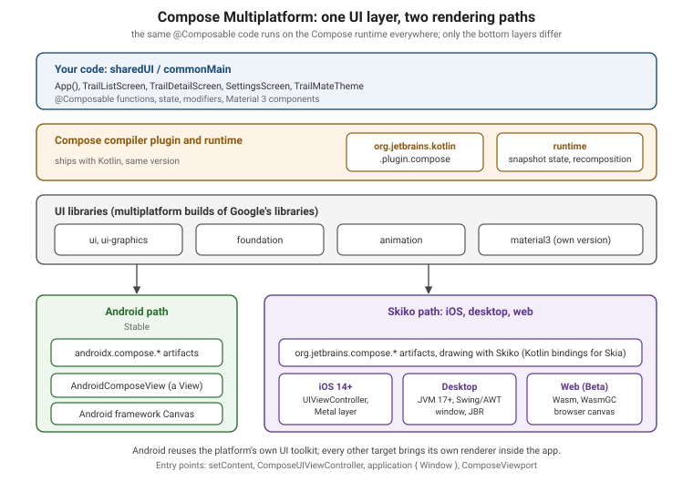

Compose Multiplatform Fundamentals
|
This content was generated with the assistance of AI and should be verified against the official documentation before being relied on in production. |
Compose Multiplatform (CMP) is JetBrains' declarative UI toolkit for Kotlin: you write @Composable functions once
in commonMain and run them on Android, iOS, desktop (JVM) and the web. It is not a different framework from
Jetpack Compose. It is the same compiler plugin, the same runtime and, for the most part, the same API surface,
with the missing platforms filled in by JetBrains. That is why this page does not re-teach composables, state
or modifiers — those are in
Compose Fundamentals and
Compose State and Side Effects in the Android section, and
everything there applies unchanged. What is new here is everything around the composables: where the
libraries come from, how the build is wired, how each platform starts the UI, and which Android-only habits break
in common code.
The baseline is the one used across this section: Kotlin 2.4.20, Compose Multiplatform 1.12.1,
AGP 9.4 (com.android.kotlin.multiplatform.library for shared modules) and Xcode 26.4, with Ktor 3.6.0,
Koin 4.2.2, SKIE 0.10.15, KMP-NativeCoroutines 1.0.6, SQLDelight 2.4.0, Room 3 (androidx.room3) 3.0.3,
Mokkery 3.5.0, vanniktech maven-publish 0.37.0, Dokka 2.2.0 and Turbine 1.2.1 in the neighbouring pages. Stability
levels used below: CMP for Android, iOS and desktop is Stable; CMP for web (Kotlin/Wasm) is Beta; the
Compose Hot Reload MCP server and the desktop window API v2 are Experimental; Swift export and SwiftPM
import, which appear in the iOS integration pages, are Alpha. Every example is a slice of TrailMate
Everywhere, the multiplatform version of the Android section’s TrailMate app
(package com.example.trailmate): the Gradle module sharedUI holds the screens, and androidApp, iosApp,
desktopApp and webApp each contain only an entry point.
CMP and Jetpack Compose: Who Owns What
Jetpack Compose is Google’s toolkit for Android. Compose Multiplatform builds on code and releases published by Google: JetBrains takes each Jetpack Compose release as the base of the next CMP release, adds the platform support for iOS, desktop and web, stabilizes it, and ships. The two are developed in close collaboration, but they are separate products with separate artifacts and release dates.
| Aspect | Jetpack Compose | Compose Multiplatform |
|---|---|---|
Platforms |
Android only |
Android, iOS, desktop (macOS, Windows, Linux), web |
Supported by |
JetBrains |
|
Maven group of the libraries |
|
|
Compiler and runtime |
Compose compiler (in the Kotlin repository since Kotlin 2.0) and Compose runtime |
The same compiler plugin and the same runtime source |
Rendering on Android |
The Android View system and platform |
The same — on Android CMP is Jetpack Compose |
Rendering elsewhere |
Not applicable |
Skia, through Skiko (Kotlin bindings for Skia), into a native surface |
Resources |
Android resource system ( |
Compose Multiplatform resources ( |
Maps, WebView, Hilt, CameraX |
Available |
Not in common code; Android-only (see the Android-only APIs section below) |
Release cadence |
Google’s Compose BOM releases |
Follows Jetpack Compose with a gap of roughly one to three months |
The practical consequence: you can learn Compose from almost any Jetpack Compose material — Google’s official
documentation included — and apply it to commonMain. The differences are the platform edges, which is what this
page maps. See the Android section’s
Compose Layouts, Lists and Modifiers and
Compose Material 3 and Theming for the shared vocabulary.
The Stack, Layer by Layer

Reading the figure from the top:
-
Your code is ordinary Kotlin in
commonMain. It never mentions a platform. -
The compiler plugin transforms every
@Composablefunction (adds the hiddenComposerparameter, group keys, skipping logic). It ships inside the Kotlin compiler repository, so its version always equals the Kotlin version. -
The runtime keeps the composition, the snapshot state system and recomposition. It is independent of any UI: it is the same engine that powers non-UI uses of Compose.
-
The UI libraries (
ui,foundation,animation,material3, …) are the part JetBrains republishes as multiplatform builds of Google’s sources. -
The renderer is the part that differs. On Android, Compose draws through the platform. On iOS, desktop and web it draws itself with Skia — pixels, not native widgets. That single decision explains most of the platform differences later on this page.
Artifacts and Version Mapping
On Android, a CMP build pulls Google’s published artifacts; on every other target it pulls JetBrains' builds. You
do not choose between them — the Gradle metadata of each CMP artifact maps androidx coordinates for the Android
target. The CMP version is not the Kotlin version and not the Jetpack Compose version, though they
correspond:
| Compose Multiplatform | Jetpack Compose used on Android | Notes |
|---|---|---|
1.12.1 (baseline) |
1.12.1 |
Skia updated to Milestone 150; improved lazy-layout scrolling on iOS; automatic font fallback on web. |
1.11.1 |
1.11.2 |
Previous feature release. |
1.10.3 |
1.10.5 |
Multiplatform |
1.9.3 |
1.9.4 |
Before the 1.10 deprecations. |
The 1.12.1 release publishes the following artifact families. Note that material3 and the navigation and
lifecycle libraries are versioned separately from the core Compose libraries, following Google’s own
versioning of those libraries:
| Library | Maven coordinates (CMP 1.12.1) | Version |
|---|---|---|
Runtime |
|
1.12.1 |
UI |
|
1.12.1 |
Foundation |
|
1.12.1 |
Material 3 |
|
1.12.0-alpha03 (own version line) |
Lifecycle |
|
2.11.0 |
Navigation |
|
2.10.0-beta01 |
Check the exact versions on the release page before pinning them; they move with every CMP release. Material 3, lifecycle and navigation each get a page of their own: Lifecycle, ViewModel and Navigation in Compose Multiplatform and Layouts, Material 3, Adaptive UI, Popups and Accessibility.
Two rules of thumb keep versions sane:
-
Kotlin and CMP do not need manual alignment. The latest CMP is always compatible with the latest Kotlin, and the Compose compiler plugin must simply carry the same version as the Kotlin plugin.
-
Libraries built on CMP must be compiled against a compatible Kotlin. CMP 1.8 and later use the K2 compiler exclusively, so depend on CMP-based libraries only when they were compiled with Kotlin 2.1.0 or newer (and prefer 2.2.20 or newer for iOS and web, which evolve fastest).
Platforms, Minimum Versions and Stability
CMP supports only 64-bit platforms. The minimum versions for CMP 1.12.1 and the stability level of each target:
| Platform | Minimum version | Stability | Notes |
|---|---|---|---|
Android |
Android 5.0 (API level 21) |
Stable |
Same code path as Jetpack Compose. |
iOS |
iOS 14 |
Stable |
Rendered with Skia (Metal) inside a |
Desktop (macOS) |
macOS 13 on arm64 |
Stable |
JVM application; JDK 11 or later to run, JDK 17 or later to package. |
Desktop (Windows) |
Windows 10 (x86-64, arm64) |
Stable |
Same JVM application model. |
Desktop (Linux) |
Ubuntu 20.04 (x86-64, arm64) |
Stable |
Same JVM application model; see Compose Multiplatform for Desktop. |
Web |
Browsers with WasmGC support |
Beta |
Kotlin/Wasm; see Web Targets: Kotlin/Wasm, Kotlin/JS and Compose for Web. |
"Beta" for web is a statement about API and behaviour stability, not about whether it runs: expect rough edges (font loading, accessibility, bundle size) and rely on the compatibility build described in the web page when you must support browsers without WasmGC. The matching Kotlin-side tiers are explained in How KMP Compiles: Targets and Tiers.
Wiring the sharedUI Module
A Compose module needs three things: the Kotlin Multiplatform plugin, the Compose compiler plugin and the CMP Gradle plugin. The first two follow the Kotlin version; the CMP plugin follows the CMP version. Declare them once in the version catalog:
# gradle/libs.versions.toml (excerpt)
[versions]
kotlin = "2.4.20"
agp = "9.4.0"
compose-multiplatform = "1.12.1"
[plugins]
kotlin-multiplatform = { id = "org.jetbrains.kotlin.multiplatform", version.ref = "kotlin" }
android-kotlin-multiplatform-library = { id = "com.android.kotlin.multiplatform.library", version.ref = "agp" }
android-application = { id = "com.android.application", version.ref = "agp" }
compose-multiplatform = { id = "org.jetbrains.compose", version.ref = "compose-multiplatform" }
compose-compiler = { id = "org.jetbrains.kotlin.plugin.compose", version.ref = "kotlin" }Note that compose-compiler uses version.ref = "kotlin": that is the whole point of the compiler living in the
Kotlin repository. Then apply them to every module that contains @Composable code — here sharedUI — and
declare the libraries by direct coordinates:
// sharedUI/build.gradle.kts
plugins {
alias(libs.plugins.kotlin.multiplatform)
alias(libs.plugins.android.kotlin.multiplatform.library)
alias(libs.plugins.compose.multiplatform)
alias(libs.plugins.compose.compiler)
}
kotlin {
android {
namespace = "com.example.trailmate.shared.ui"
compileSdk = 36
minSdk = 24
}
iosArm64()
iosSimulatorArm64()
jvm("desktop")
wasmJs { browser() }
sourceSets {
commonMain.dependencies {
api(projects.sharedLogic)
implementation(libs.compose.runtime)
implementation(libs.compose.foundation)
implementation(libs.compose.material3)
implementation(libs.compose.ui)
implementation(libs.compose.components.resources)
}
}
}See Kotlin docs — Create a Kotlin Multiplatform app and Android Developers — Set up the Android Gradle library plugin for KMP.
The module uses com.android.kotlin.multiplatform.library, so there is no androidTarget() call and no Android
application in this module: MainActivity lives in androidApp, as explained in
The Android Target and AGP 9. The matching catalog
entries are plain library aliases:
# gradle/libs.versions.toml (excerpt, libraries)
[libraries]
compose-runtime = { module = "org.jetbrains.compose.runtime:runtime", version.ref = "compose-multiplatform" }
compose-foundation = { module = "org.jetbrains.compose.foundation:foundation", version.ref = "compose-multiplatform" }
compose-ui = { module = "org.jetbrains.compose.ui:ui", version.ref = "compose-multiplatform" }
compose-components-resources = { module = "org.jetbrains.compose.components:components-resources", version.ref = "compose-multiplatform" }
# material3 has its own version line (1.12.0-alpha03 in the CMP 1.12.1 release notes)
compose-material3 = { module = "org.jetbrains.compose.material3:material3", version = "1.12.0-alpha03" }The <material3-version-from-release-notes> placeholder is deliberate: Material 3 is versioned independently, and
a stale hard-coded value is a common source of "unresolved reference" errors after a CMP upgrade. The project
layout around this module (which modules exist, who depends on whom) is described in
Project Structure, Targets, Source Sets and the Hierarchy Template.
The Compose Compiler Plugin
The Compose compiler is what turns annotated functions into a recomposable tree. Since Kotlin 2.0.0 it is
merged into the Kotlin repository and released together with Kotlin, so there is no longer a separate
"compiler version vs Kotlin version" compatibility table — the artifact is the Gradle plugin
org.jetbrains.kotlin.plugin.compose, versioned identically to Kotlin. Apply it in every module that contains
composables, next to org.jetbrains.compose. When used with AGP, it overrides the compiler coordinates AGP
would otherwise supply.
Compiler options live in the composeCompiler \{} extension. Reports are the most useful ones: they show which
composables the compiler considers restartable and skippable, and which types it considers unstable.
// sharedUI/build.gradle.kts
composeCompiler {
// Where to write the per-module reports (text) and metrics (CSV/JSON)
reportsDestination.set(layout.buildDirectory.dir("compose_compiler"))
metricsDestination.set(layout.buildDirectory.dir("compose_compiler"))
// Tell the compiler that kotlinx.datetime and our domain model are stable
stabilityConfigurationFiles.add(
rootProject.layout.projectDirectory.file("stability_config.conf")
)
}Why this matters more in multiplatform than on Android only: a type from a library compiled without the Compose
compiler is "unstable" by default, and a composable that takes it is re-run on every parent recomposition. The
stability configuration file (one class pattern per line, for example com.example.trailmate.domain. and
kotlinx.datetime.) is the supported way to opt such types in without wrapping them. Reading and acting on
the reports is covered in the Android section’s
Debugging, Code Quality and Performance.
Two Kotlin 2.0 era issues are worth knowing by name, because they show up in old posts. Compose compiler 2.0.0
sometimes inferred stability incorrectly on non-JVM targets, which caused needless or endless recompositions; the
fix is Kotlin 2.0.10 or later and dependencies built with the same compiler. Switching a project between
Kotlin 1.9 and 2.0 can also trigger MissingResourceException: Missing resource with path until all build/
directories are deleted.
Deprecated Plugin Aliases and Direct Coordinates
Older CMP projects declared UI dependencies through accessors generated by the Gradle plugin: compose.runtime,
compose.ui, compose.foundation, compose.material3, compose.components.resources. Those accessors are
deprecated; modern projects, including the wizard-generated ones, depend on the artifact coordinates directly,
usually through the version catalog as above.
| Legacy accessor (deprecated) | Direct coordinate |
|---|---|
|
|
|
|
|
|
|
|
|
|
|
|
Why the change: the accessors forced every dependency to the plugin’s own version, while Material 3, navigation and
lifecycle now follow independent version lines. Direct coordinates let the version catalog (and Gradle’s
dependency management) own all versions, and they make the dependency list readable by any Gradle tool. A project
that still uses compose.* builds with deprecation warnings; migrate them when you touch the build.
Writing Common UI
With the module wired, the UI is plain Compose in commonMain. TrailMate’s root composable takes only what it
needs (no platform types) and delegates to a theme and a screen:
// sharedUI/src/commonMain/kotlin/com/example/trailmate/ui/App.kt
package com.example.trailmate.ui
import androidx.compose.runtime.Composable
import androidx.compose.ui.tooling.preview.Preview
import com.example.trailmate.presentation.TrailListViewModel
import org.koin.compose.viewmodel.koinViewModel
@Composable
@Preview
fun App() {
TrailMateTheme {
val viewModel: TrailListViewModel = koinViewModel()
TrailListScreen(viewModel = viewModel)
}
}App() hands the screen to TrailListScreen, a plain composable in the same package that collects the shared
ViewModel’s StateFlow<TrailListUiState> and renders a LazyColumn. Every Compose import in such code comes from
androidx.compose. packages — *the package names are the same as in Jetpack Compose, even though on iOS, desktop and web the artifacts are JetBrains builds. That is what makes code written
for Android compile unchanged. safeContentPadding() matters on iOS: it keeps content out of the notch and the
home-indicator area, which Android draws edge to edge by default. ViewModel creation (koinViewModel()) is
covered in Dependency Injection with Koin and Metro
and Architecture and Shared ViewModels.
Entry Points: One Per Platform
The shared App() is never the program’s entry point. Every platform has its own bootstrap, and these thin
entry points are where platform-specific wiring (dependency injection, edge-to-edge, window size) belongs. In a
well-structured project they are the only files that differ.
| Platform | Entry point | What hosts the composition |
|---|---|---|
Android |
|
|
iOS |
|
a |
Desktop |
|
a Swing/AWT window on the JVM |
Web |
|
a canvas inside the page, sized to the viewport |
Android: MainActivity and setContent
// androidApp/src/main/kotlin/com/example/trailmate/android/MainActivity.kt
package com.example.trailmate.android
import android.os.Bundle
import androidx.activity.ComponentActivity
import androidx.activity.compose.setContent
import androidx.activity.enableEdgeToEdge
import com.example.trailmate.ui.App
class MainActivity : ComponentActivity() {
override fun onCreate(savedInstanceState: Bundle?) {
enableEdgeToEdge()
super.onCreate(savedInstanceState)
setContent { App() }
}
}This is exactly the Jetpack Compose entry point; the Android basics are in
Activities and Lifecycle. The androidApp module depends on
sharedUI (implementation(projects.sharedUI)) and applies com.android.application; Koin is started from the
Application class.
iOS: ComposeUIViewController
On iOS, Kotlin exposes a function that returns a UIViewController; Swift hosts it. The Kotlin side:
// sharedUI/src/iosMain/kotlin/com/example/trailmate/ui/MainViewController.kt
package com.example.trailmate.ui
import androidx.compose.ui.window.ComposeUIViewController
import platform.UIKit.UIViewController
fun MainViewController(): UIViewController = ComposeUIViewController { App() }The Swift side wraps that controller in a UIViewControllerRepresentable and ignores the safe area so Compose can
draw to the screen edges (it applies insets itself):
// iosApp/iosApp/ContentView.swift
import SwiftUI
import Shared // the framework produced by sharedUI
struct ComposeView: UIViewControllerRepresentable {
func makeUIViewController(context: Context) -> UIViewController {
MainViewControllerKt.MainViewController()
}
func updateUIViewController(_ uiViewController: UIViewController, context: Context) {}
}
struct ContentView: View {
var body: some View {
ComposeView()
.ignoresSafeArea() // Compose handles the safe area itself
}
}ComposeUIViewController also takes a configure lambda for options such as the status-bar style and accessibility
behaviour; the nesting patterns (Compose inside SwiftUI, SwiftUI inside Compose, UIKit views) are in
Compose Multiplatform on iOS. The Xcode wiring
of the framework is in Integrating Shared Code into iOS,
and the SwiftUI side in SwiftUI Views and Modifiers.
Desktop: application and Window
// desktopApp/src/main/kotlin/com/example/trailmate/desktop/Main.kt
package com.example.trailmate.desktop
import androidx.compose.ui.unit.DpSize
import androidx.compose.ui.unit.dp
import androidx.compose.ui.window.Window
import androidx.compose.ui.window.application
import androidx.compose.ui.window.rememberWindowState
import com.example.trailmate.ui.App
fun main() = application {
Window(
onCloseRequest = ::exitApplication,
title = "TrailMate",
state = rememberWindowState(size = DpSize(480.dp, 800.dp)),
) {
App()
}
}application \{} starts the event loop; Window creates a native window; closing it calls exitApplication so the
process ends. Multiple windows, trays and menus are the topic of
Compose Multiplatform for Desktop.
Web: ComposeViewport
// webApp/src/wasmJsMain/kotlin/com/example/trailmate/web/Main.kt
package com.example.trailmate.web
import androidx.compose.ui.ExperimentalComposeUiApi
import androidx.compose.ui.window.ComposeViewport
import com.example.trailmate.ui.App
// The web API is experimental and requires an opt-in
@OptIn(ExperimentalComposeUiApi::class)
fun main() {
ComposeViewport { App() }
}ComposeViewport attaches the composition to the page body (an overload accepts a container element) and resizes
it with the browser viewport. The @OptIn(ExperimentalComposeUiApi::class) is part of why the web target is Beta.
The page’s HTML, the compatibility build and browser navigation are covered in
Web Targets: Kotlin/Wasm, Kotlin/JS and Compose for Web.
Common Previews
Previews render a composable in the IDE (IntelliJ IDEA and Android Studio) without launching an emulator. They are
a core Jetpack Compose feature, and CMP now uses the same annotation: since CMP 1.10.0 the
androidx.compose.ui.tooling.preview.Preview annotation is multiplatform. The earlier JetBrains-specific
annotation (org.jetbrains.compose.ui.tooling.preview.Preview) is deprecated; use the androidx one in new
code. Previews need an Android target, because the rendering is done by the Android tooling.
// sharedUI/build.gradle.kts
kotlin {
sourceSets {
commonMain.dependencies {
// The multiplatform @Preview annotation (CMP 1.10.0 and later)
implementation("org.jetbrains.compose.ui:ui-tooling-preview:1.12.1")
}
}
}
dependencies {
// com.android.kotlin.multiplatform.library has no debugImplementation;
// androidRuntimeClasspath puts the tooling on the preview classpath only
androidRuntimeClasspath("org.jetbrains.compose.ui:ui-tooling:1.12.1")
}With AGP 9’s Android-KMP library plugin the tooling dependency goes into androidRuntimeClasspath, as in the
snippet (if your IDE’s Gradle accessors do not generate it, write it as "androidRuntimeClasspath"(…));
with com.android.application — for example in androidApp — the traditional debugImplementation is used
instead. A preview is an ordinary composable annotated with @Preview, like App() above.
The supported @Preview parameters in common code are name, group, widthDp, heightDp, locale,
showBackground and backgroundColor; the Android-only ones (device frames, UI mode) are Android tooling features.
The Jetpack Compose side of previews is in
Android Developers — Preview your UI with composable previews.
Compose Hot Reload
Previews show isolated composables with fake data. Compose Hot Reload instead applies your code changes to a running app, without restarting it and with its state preserved. It works on the desktop JVM target; there is no hot reload on iOS, Android-via-CMP or web, so the desktop app is your fast UI sandbox for common code, and you verify on the real platforms afterwards.
-
Since CMP 1.10.0 the Compose Hot Reload Gradle plugin is bundled and enabled by default in every project with a desktop target.
-
It requires Kotlin 2.1.20 or later and runs on the JetBrains Runtime (JBR), an OpenJDK fork with enhanced class redefinition. The newest JBR supports Java 21; a project that is only Java 22+ compatible fails with a linkage error, so use a JDK 21 toolchain for the desktop module. The Foojay toolchain resolver plugin can provision JBR automatically.
-
From the terminal, run the desktop app with hot reload through the
hotRuntask; from the IDE, use the gutter action Run with Compose Hot Reload (or the generateddesktopApp [hot]run configuration). Saving the file, or pressing the reload shortcut, applies the change. -
CMP 1.12.0 added a built-in MCP server for AI coding agents (trigger a reload, take screenshots, read the semantics tree, simulate input). It is Experimental.
# repository root -- run TrailMate Desktop with hot reload
./gradlew :desktopApp:hotRun --mainClass com.example.trailmate.desktop.MainKtThe comparison of the three feedback loops:
| Tool | What it shows | Targets | Needs |
|---|---|---|---|
|
An isolated composable with test data |
Rendered by Android tooling, from common code |
An Android target and the tooling dependencies |
Compose Hot Reload |
The whole running app, updated in place |
Desktop JVM only |
JBR, JDK 21 toolchain, a desktop target |
Full run |
The real app |
Any target |
Emulator, simulator, browser or desktop launch |
Android-Only APIs to Keep Out of commonMain
Jetpack Compose documentation and community samples are written for Android. If you paste a snippet into
commonMain and the IDE reports an unresolved reference, it is almost always an Android-only API. There are
three categories:
-
Android-specific by nature — they use
android.*classes and make no sense elsewhere. -
Multiplatform replacements exist under a different name or library.
-
Not yet ported — they may arrive in a later CMP release.
| Android-only habit | Why it does not compile in common code | Common-code replacement |
|---|---|---|
|
|
Pass what you need from the entry point, use expect/actual (see below) or Koin; resources through |
|
They are Android view-system classes |
The per-platform entry points above |
|
|
|
|
Android resource IDs |
|
|
Wraps Android |
|
Hilt ( |
Annotation processing on Android types |
Koin ( |
Maps Compose |
Google Maps SDK is Android-only |
Platform map views through interop (for example |
|
Out of CMP’s scope: platform services, not UI |
A shared interface plus platform implementations, e.g. |
A few items in the "not yet ported" category exist even without android classes in their signatures, such as
Modifier.imeNestedScroll(), Modifier.systemGestureExclusion(), Modifier.magnifier(),
LocalOverscrollConfiguration and AnimatedImageVector.animatedVectorResource. The documentation lists them per
release; re-check the list after every upgrade, because items move out of it.
When a platform capability is genuinely needed, do not leak the Android type into common code. Define an interface
or an expect declaration and provide the platform parts in platform source sets — the mechanism is explained in
Expect/Actual and Platform APIs:
// sharedUI/src/commonMain/kotlin/com/example/trailmate/ui/PlatformInsets.kt
package com.example.trailmate.ui
import androidx.compose.runtime.Composable
/** Opens the platform's share sheet. Common code never touches android.content.Context. */
interface ShareLauncher {
fun shareTrail(name: String, url: String)
}
@Composable
expect fun rememberShareLauncher(): ShareLauncher// sharedUI/src/androidMain/kotlin/com/example/trailmate/ui/PlatformInsets.android.kt
package com.example.trailmate.ui
import android.content.Intent
import androidx.compose.runtime.Composable
import androidx.compose.runtime.remember
import androidx.compose.ui.platform.LocalContext
@Composable
actual fun rememberShareLauncher(): ShareLauncher {
// LocalContext is legal here: this is androidMain, not commonMain
val context = LocalContext.current
return remember(context) {
object : ShareLauncher {
override fun shareTrail(name: String, url: String) {
val send = Intent(Intent.ACTION_SEND).apply {
type = "text/plain"
putExtra(Intent.EXTRA_TEXT, "$name $url")
}
context.startActivity(Intent.createChooser(send, null))
}
}
}
}The composable’s signature is common; each platform fills in its own implementation. The desktop and web source
sets would provide actual`s too (a desktop clipboard copy, the browser share API), or the function can return a
no-op. The alternative is a plain interface supplied by Koin from each entry point; choose `expect when the
implementation needs @Composable context such as LocalContext.
Platform-Specific Default Behaviours
CMP aims for the same behaviour everywhere, but a handful of differences are unavoidable. They are not bugs; plan for them and test on each platform:
| Area | What differs | What to do |
|---|---|---|
Fonts and text |
Without an explicit font each system uses its own default font, and anti-aliasing differs even for the same font. No pixel-perfect match is guaranteed. |
Bundle a font (see the resources page) if brand typography or screenshot tests matter. |
Software keyboard and insets |
iOS imitates the Compose window-insets approach, but the keyboard can be positioned slightly differently. |
Use |
Touch and mouse |
Desktop interprets all pointer input as mouse gestures; there is no multi-touch (no pinch-to-zoom). |
Offer buttons or the scroll wheel as alternatives on desktop. |
Scroll physics |
Android and iOS match their platform feel; desktop scrolling is limited to the mouse wheel. |
Nothing — do not emulate platform physics by hand. |
Native pop-ups |
Text-selection actions (Copy, Translate) are the platform’s own and look different per platform. |
Accept it; they are not customizable from Compose. |
Back gesture |
Android has it by default. iOS has none by default, but CMP implements an edge-swipe back to match Android. On desktop the |
Wire back handling through the navigation APIs, see Lifecycle, ViewModel and Navigation. |
Interop views |
Embedding native views needs platform-specific APIs: UIKit and SwiftUI interop on iOS, Swing interop on desktop. |
See the iOS and desktop pages of this section. |
The rendering choice is also the source of the biggest non-difference: because every Skia target draws its own
pixels, the UI looks identical on iOS and desktop — it does not adopt iOS or macOS system controls. A
Switch on iOS is Material’s switch, not a UISwitch. If you need genuinely native look and feel, either use
native UI with shared logic (see
What Is Kotlin Multiplatform) or embed native
views, as TrailMate does for the map.
Common Mistakes
-
Mixing Compose versions across modules. The compiler plugin must match the Kotlin version, and the
org.jetbrains.composeplugin version should be identical in every module. A mismatch shows up as linker errors on iOS orNoSuchMethodErroron the JVM. -
Forgetting the compiler plugin in one module. A module with
@Composablecode but withoutorg.jetbrains.kotlin.plugin.composefails to compile or, worse, behaves incorrectly at runtime. Apply it to every Compose module. -
Using
debugImplementationin a library module with the Android-KMP plugin. There are no build variants; useandroidRuntimeClasspathfor tooling. -
Running Hot Reload on a non-JBR JDK, or on Java 22+. Pin a JDK 21 toolchain for the desktop module.
-
Leaking
LocalContextinto common code. Use expect/actual or an interface injected by Koin. -
Expecting native widgets. On Skia targets controls are drawn, not wrapped; native look needs interop.
-
Ignoring the iOS safe area. Compose draws edge to edge; use
safeContentPadding()andWindowInsetsrather than hard-coded top padding.